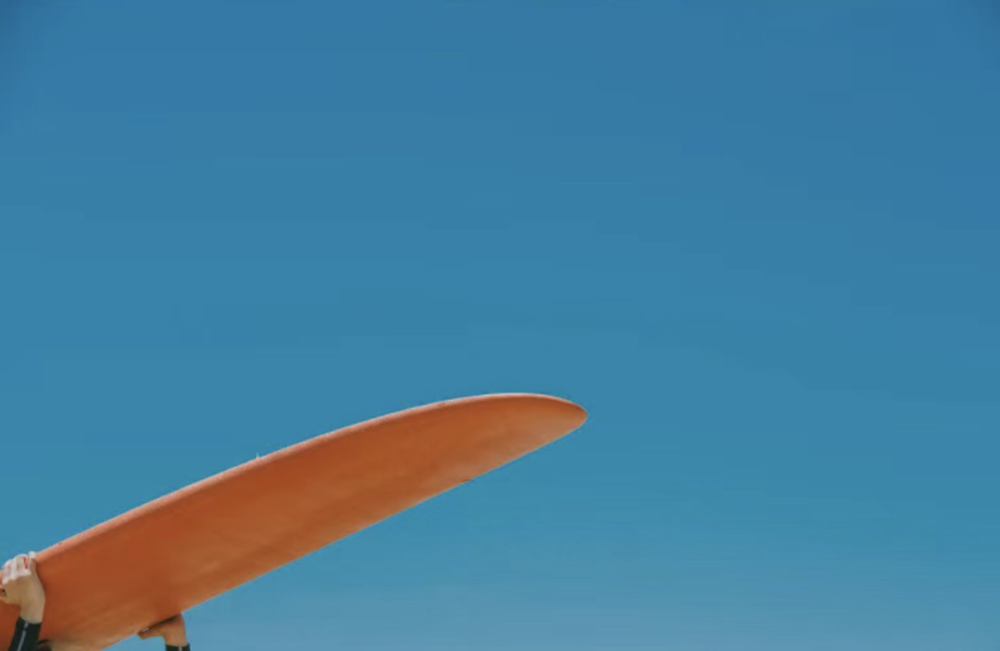
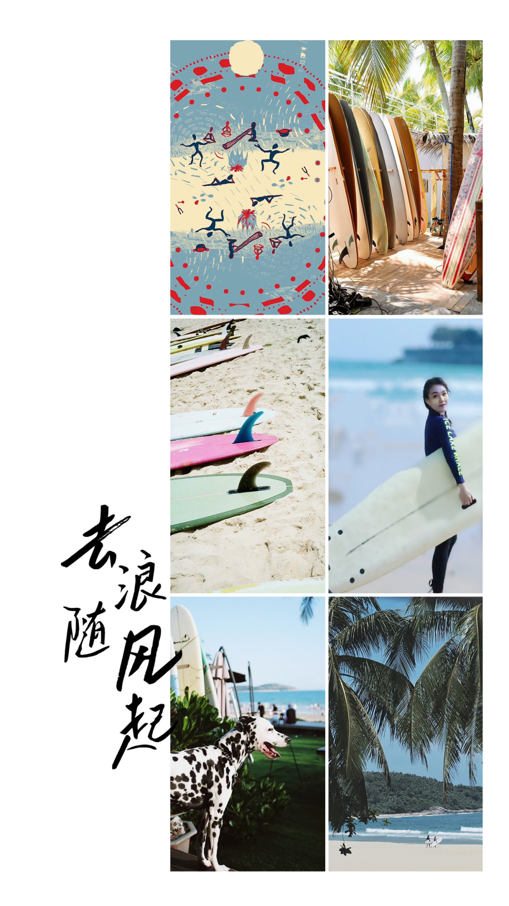
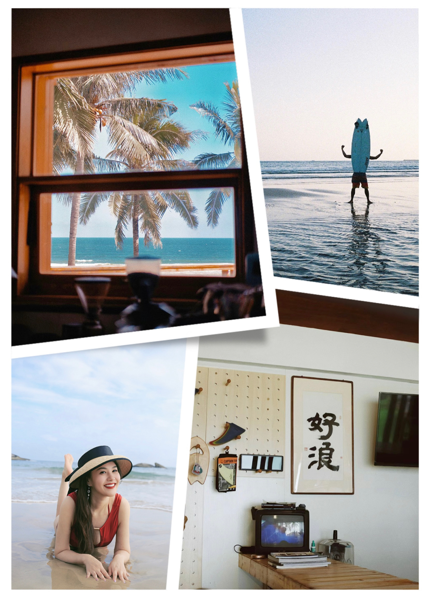
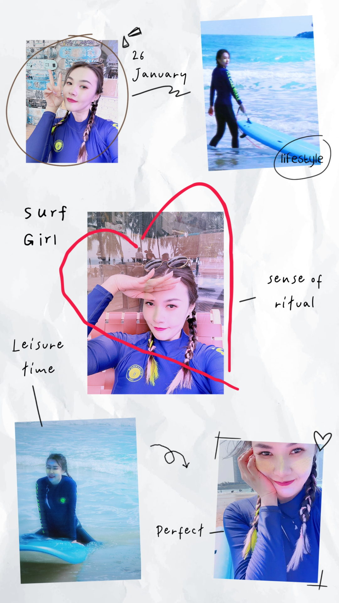
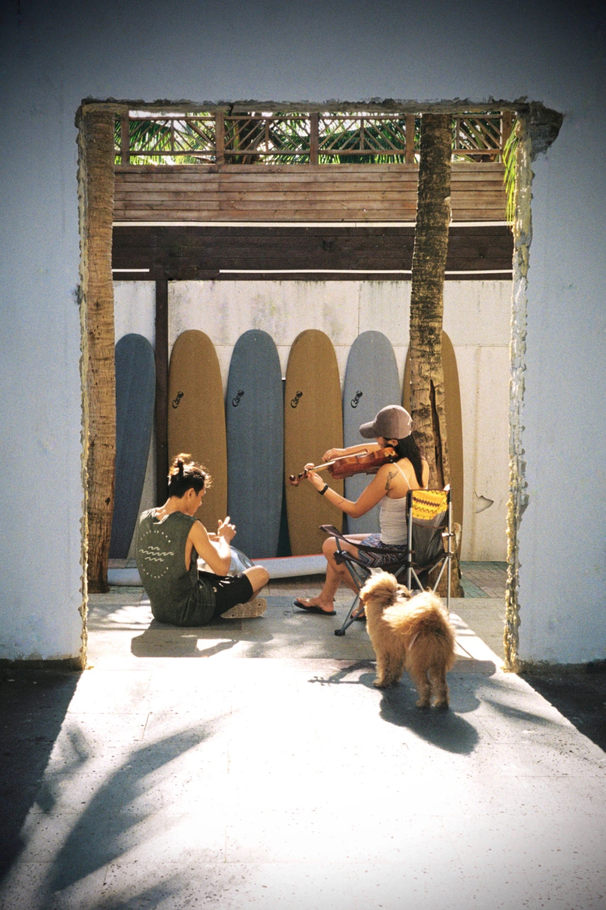
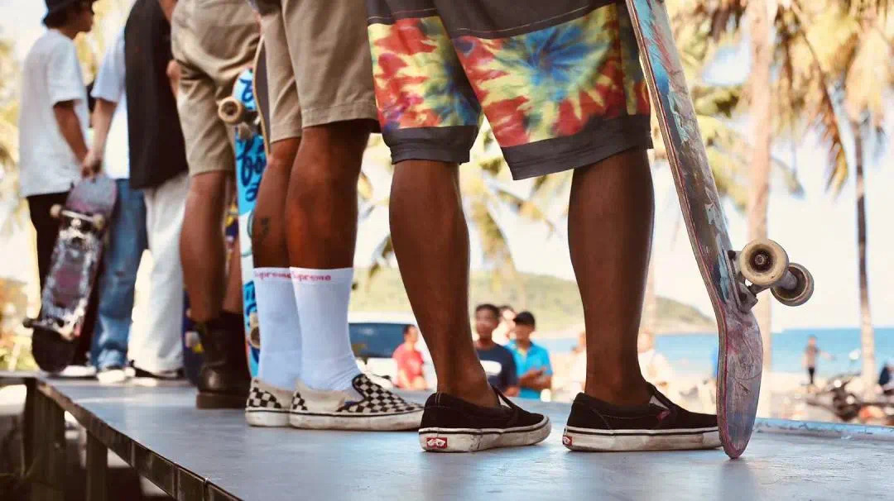
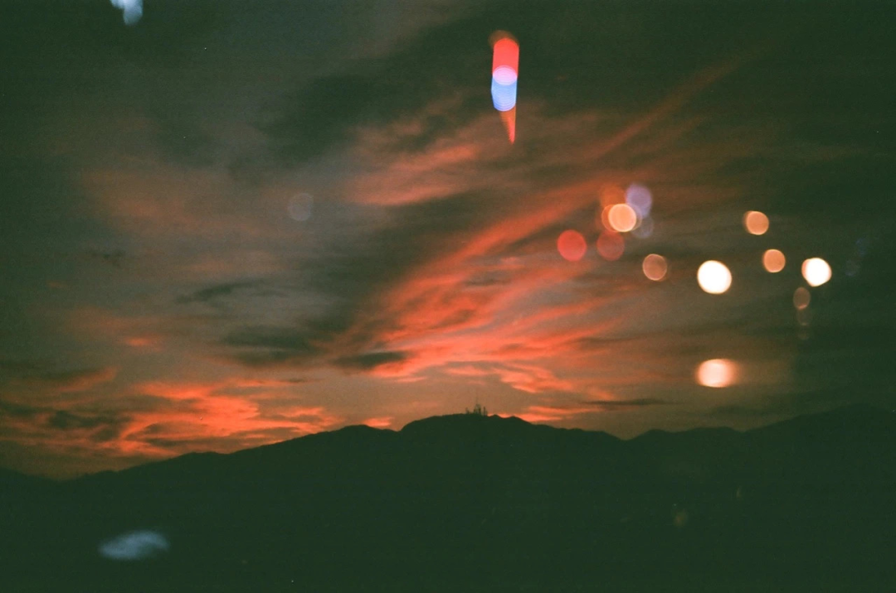
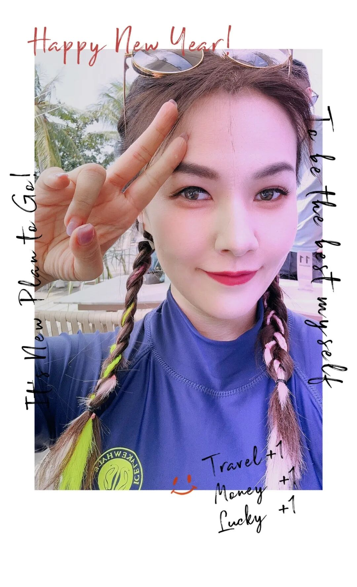

愿你渐渐靠近自己向往的生活

近年日月湾冲浪很流行，去海南过春节时，我总会绕道去。
也就晒晒太阳，吃喝摆烂，放松懒散。今天冲浪回来时还忘拿包，多折返一番，为海南高速大堵车贡献一份力。
一旦习惯了这样一事无成的假期，也很开心呢，没有人说生活一定要是什么样子。
春节在中国，就像一场大迁徙。以前我们每年都会飞十几个小时寻找一个遥远的国度逃逸。疫情三年，全国似乎都被困在了海南，今年大概率是最后一次。可能人老了很多事情都会“变味”，但这种 “变味” 确是更有滋味。
毕竟，海面上看到的落日和写字楼里看到的不一样。自然给予的快乐和感动，在城市里也体会不到。

日月湾虽然是世界三大冲浪胜地之一，拥有高质量定点浪型和沙滩浪型的海域。但除了春节人满为患之外，软件坦白说和澳洲、夏威夷相比何止是不太行，简直是太不行…… 入门的教练没有能力教会你计算浪点，只能充当「推板师」。
但这并不妨碍我在出发前预订了冲浪课。对于冲浪，我没有什么目标，30岁第一次冲浪，从没想过要练成什么样，怎么轻松怎么来。
都市丽人和冲浪那么朋克的运动，本就不太搭。更何况我不会游泳，也很胆小，特别怕呛水，所以迟迟不敢迈出这一步。后来终于想通了，随意呗，用当下流行的词叫「松弛感」，说白了就是：放过自己，做不到也无所谓。
下定决心做一件事情，也说不上来为什么，就是喜欢吧。
「喜欢」是一件很奇怪的事情。

20岁时面试第一份工作PR & Communication Supervisor，那时的上司 Raymond 是位老派的香港先生，曾就职通用汽车、可口可乐，也作为文汇报记者报道香港回归、科比退役，敬业专业又有情怀，闲暇之余在建国路开一家设计书店。
他问：你为什么觉得自己可以做这份工作？
大学都没毕业来找实习的我哪里答得上来，支吾回答：可能是我天生就擅长吧，这也是我唯一擅长的事情。你呢？
Raymond 说：因为「喜欢」。
那一瞬间，被这个一辈子做marketing的前辈inspired，又有一点crush。这可能就是我喜欢这件事的开始。转眼间，这一行一做就是十年。
当然，将喜欢的事变为职业，只有一小部分人如此幸运。大多数人，在现实的工作中，慢慢发现其中的乐趣，取得一些成就感，分享自己学到的知识，这未尝不是一种成功。

阳康后第一练
祝我自己早日回归体坛
喜欢冲浪还有一些生理原因。和Gym一样，冲浪在一定的运动时间和运动强度后，身体会分泌内啡肽，让你当下内心充实，多巴胺让你对下一次产生期待，你感到欢愉和满足，这种人造激素，可以帮助保持年轻快乐。
于是，我在海边 laid back ，梳起脏辫，这种状态令人无忧无虑。有一点「游牧 Nomad」，又有一点「嬉皮 Hippe」。
当然浪人的态度不是晒黑，编个辫子，穿着波西米亚风的服饰就是了。「游牧 Nomad」这个词，现在都快被艺术圈用烂了，就好像随便一个艺术家，出了个家门，做了个项目，就算去游牧了。
特意查考了德勒兹和加塔利的《千高原》，「游牧 Nomad」是一种将坚固的存在主义转化为了一种充满开放性的世界观。至今没有任何一个人真正定义过这个词，可能这个词本身就没有本质，它一直在“持续逃逸”。
就像围棋和象棋。象棋的每个棋子都有固定身份和地位，在预先设定好的空间和编制里进行游戏。而围棋则是匿名的，并且以多来构成1，充满着无限的不确定性。
所以，「游牧 Nomad」这个概念在政治和美学方向都有突破性意义，它是一种多声部的状态。例如：一个人可以是美国人、女人、无产阶级、一个爱吃芦笋的人、一个习惯性咬指甲的人……同时存在于这种平行状态下。


万宁大大小小的冲浪俱乐部遍地全国游牧浪人聚集于日月湾毕竟有人赞美996有人轻松自在生活，永远活在夏天
当然我算不上数字牧民，毕竟我连电脑也没带去海南。很多时候，对海滩的浪漫想象，是一种被消费的状态。我也只不过是用一个春节，消费了一次短暂“逃逸”。但我开始渐渐相信，生活就由一次又一次短暂的“持续逃逸”组成的。
从有用的生活，偶尔逃逸到无用的生活。其实“有用”和“无用”，在很大程度上是一个时间的维度。短时间无用的东西，有可能在长期看是有用的；有些看上去长时间是无用的，短期可能反而有用。
无用之用，生活才更有意思。山水、园林、酒茶、书画、杯盏器物……这些以世界的标准看就是闲事，挣不了啥钱，可能还很费钱。但放在身边就是所谓的“长物”，是值得珍惜的值钱玩意儿。
而喜欢也需要一点时间。很多事情我们一开始觉得有意思很好玩，你不去做，其实不太知道自己是不是真的喜欢。一旦真正去做了，要持久付出了，你才能看到真正的自己。

有时候你觉得的喜欢，只是最美的那一刻吸引了你，你只是想得到，只是在索取。真正的喜欢是你愿意付出，一年四季不间断的付出，乐在其中。
这件最喜欢的事，对我而言就是 Marketing。老天眷顾，年后去喜欢的品牌履新，继续做自己喜欢的事，希望可以和 Raymond 一样做到老。
新的一年，分享一段话给大家共勉：
如果有一样你想要的东西，你得到之后觉得不过如此，那这东西只是你的欲望。如果一件东西你得到后爱不释手，不会随着时间而改变，这才是真正的喜欢。
人大多是不知道自己真正喜欢什么的，他们一生所追求的东西和想要的东西，常常只是以为自己喜欢，其实并不是，那只是世俗想要你做到的事情，你之所以拼命去追逐，只是想向世俗证明自己。
所以在这个追逐的过程中，你没有什么快乐，总觉得自己在坚持，在熬，也很难成功。即使最后成功了，快乐是短暂的，没多久就会觉得空虚。
真正喜欢的事情，和别人无关，和世俗观念无关，你的动力就是来自于内心的喜欢，无需坚持，也无需证明自己，也不会过于在乎最后的成功，因为做这件事情你就很快乐。我想最好的人生，就是找到这样的事，无论是你的事业，还是你的业余爱好，都是自己真正喜欢的事，你会一直乐在其中。成功会追着你跑，而不是你去追求成功。这种人生，才是真正的成功。

向往的生活，是一种追求愿你渐渐靠近自己向往的生活即使很难，也别忘记 - 《以喜欢的方式去生活》-
…

2023.01.26
——END